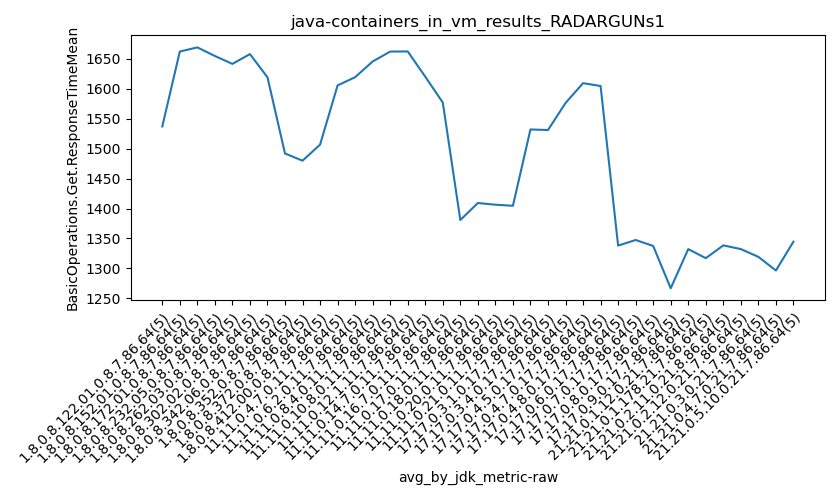
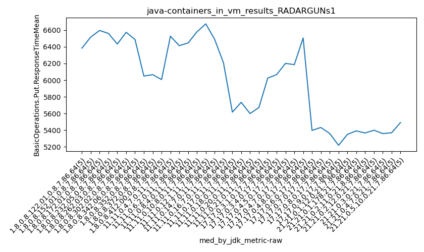

java- RADARGUNs1
Context at bottom
/home/jvanek/git/benchmarks-in-nested-virtualisation-toolchain/final_results/containers_in_vm_results/containers_in_vm_results_RADARGUNs3
java-
RADARGUNs1
/home/jvanek/git/benchmarks-in-nested-virtualisation-toolchain/final_results/containers_in_vm_results/containers_in_vm_results_JMH
java-
RADARGUNs1
/home/jvanek/git/benchmarks-in-nested-virtualisation-toolchain/final_results/containers_in_vm_results/containers_in_vm_results_SPECJBB
java-
RADARGUNs1
/home/jvanek/git/benchmarks-in-nested-virtualisation-toolchain/final_results/containers_in_vm_results/containers_in_vm_results_DACAPO
java-
RADARGUNs1
/home/jvanek/git/benchmarks-in-nested-virtualisation-toolchain/final_results/containers_in_vm_results/containers_in_vm_results_RADARGUNs1
java-
RADARGUNs1
containers_in_vm_results_RADARGUNs1
- containers_in_vm_results_RADARGUNs1 - throughput get
- containers_in_vm_results_RADARGUNs1 - throughput put
- containers_in_vm_results_RADARGUNs1 - response mean time get
- containers_in_vm_results_RADARGUNs1 - response mean time put
containers_in_vm_results_RADARGUNs1 - throughput get
Expected number of java- JDKs: 19
1st avgmed_alljdks_metric:
/home/jvanek/git/benchmarks-in-nested-virtualisation-toolchain/final_results/result_processing.py /home/jvanek/git/benchmarks-in-nested-virtualisation-toolchain/final_results/containers_in_vm_results/containers_in_vm_results_RADARGUNs1 BasicOperations.Get.Throughput= False
values: [2177376, 2339239, 2229157, 2204156, 2366318, 2178538, 2136640, 2188359, 2157518, 2205759, 2132638, 2308895, 2089654, 2332406, 2222945, 2234212, 2142093, 2314771, 2305545, 2279697, 2305500, 2316559, 2345077, 2239661, 2271924, 2274411, 2233397, 2288302, 2270251, 2304190, 2321234, 2320047, 2219648, 2345154, 2332023, 2263148, 2237281, 2291206, 2250339, 2279963, 2022743, 2237115, 2230586, 2297719, 2277076, 2258038, 2289654, 2019484, 2220036, 2203486, 2284164, 2199049, 2206321, 2177549, 1933528, 2226666, 2177058, 1977285, 2203863, 2250270, 2352550, 2223155, 2256268, 2262013, 2198668, 2302314, 2304974, 2241170, 2371603, 2342833, 2280520, 2340981, 2416591, 2329686, 2380942, 2442800, 2263870, 2408129, 2204499, 2340157, 2009192, 2054623, 2297083, 2332487, 2377135, 2372618, 2242708, 2368585, 1927367, 2299688, 2175657, 2309115, 2173960, 2273994, 2330715]

Expected number of iterations: 5
final number of values: 95 out of 95
Pass rate: 100.0%
values: (1927367, 2442800, 2250058.642105263, 2263870)

** accuracy from all jdks and runs
more is better
MIN: 1927367
MAX: 2442800
AVG: 2250058.642105263
MED: 2263870
Relative differences 1:
MIN-MAX: 21.0 %
MIN-AVG: 14.0 %
MIN-MED: 15.0 %
MAX-MIN: -27.0 %
MAX-AVG: -9.0 %
MAX-MED: -8.0 %
AVG-MED: 1.0 %
stored to java-.properties. sort | uniq that!
2nd avgmed_by_jdk_metric:
values: [2263249.2, 2173362.8, 2217307.6, 2255263.6, 2295744.2, 2274110.2, 2307621.2, 2264387.4, 2213047.8, 2198139.6, 2160122.2, 2167028.4, 2258530.8, 2312578.8, 2349744.0, 2331891.0, 2214104.0, 2242193.2, 2252688.2]

values: [2229157, 2178538, 2222945, 2279697, 2305500, 2274411, 2321234, 2263148, 2237115, 2220036, 2199049, 2203863, 2256268, 2304974, 2340981, 2340157, 2297083, 2299688, 2273994]

values: (2160122.2, 2349744.0, 2250058.6421052627, 2255263.6)
values: (2178538, 2340981, 2265675.6842105263, 2273994)

** accuracy from all jdks where runs were avged
more is better
MIN: 2160122.2
MAX: 2349744.0
AVG: 2250058.6421052627
MED: 2255263.6
Relative differences 1:
MIN-MAX: 8.0 %
MIN-AVG: 4.0 %
MIN-MED: 4.0 %
MAX-MIN: -9.0 %
MAX-AVG: -4.0 %
MAX-MED: -4.0 %
AVG-MED: 0.0 %
stored to java-.properties. sort | uniq that!
** accuracy from all jdks where runs were medianed
more is better
MIN: 2178538
MAX: 2340981
AVG: 2265675.6842105263
MED: 2273994
Relative differences 1:
MIN-MAX: 7.0 %
MIN-AVG: 4.0 %
MIN-MED: 4.0 %
MAX-MIN: -7.0 %
MAX-AVG: -3.0 %
MAX-MED: -3.0 %
AVG-MED: 0.0 %
stored to java-.properties. sort | uniq that!
containers_in_vm_results_RADARGUNs1 - throughput put
Expected number of java- JDKs: 19
1st avgmed_alljdks_metric:
/home/jvanek/git/benchmarks-in-nested-virtualisation-toolchain/final_results/result_processing.py /home/jvanek/git/benchmarks-in-nested-virtualisation-toolchain/final_results/containers_in_vm_results/containers_in_vm_results_RADARGUNs1 BasicOperations.Put.Throughput= False
values: [544400, 584866, 557265, 550959, 591552, 544648, 534141, 547125, 539370, 551436, 533177, 577255, 522504, 583073, 555690, 558534, 535568, 578652, 576395, 569911, 576334, 579144, 586259, 559949, 567991, 568658, 558395, 572069, 567564, 576052, 580303, 579933, 554896, 586332, 582998, 565749, 559348, 572791, 562601, 569980, 505678, 559302, 557623, 574436, 569242, 564508, 572429, 504882, 555032, 550851, 571045, 549809, 551559, 544425, 483370, 556666, 544282, 494338, 550971, 562596, 588107, 555802, 564060, 565512, 549608, 575561, 576261, 560309, 592886, 585695, 570104, 585241, 604108, 582409, 595231, 610754, 565932, 602073, 551082, 585057, 502262, 513677, 574282, 583085, 594286, 593130, 560660, 592113, 481848, 574928, 543897, 577272, 543514, 568478, 582664]
Expected number of iterations: 5
final number of values: 95 out of 95
Pass rate: 100.0%
values: (481848, 610754, 562513.6736842105, 565932)

** accuracy from all jdks and runs
more is better
MIN: 481848
MAX: 610754
AVG: 562513.6736842105
MED: 565932
Relative differences 1:
MIN-MAX: 21.0 %
MIN-AVG: 14.0 %
MIN-MED: 15.0 %
MAX-MIN: -27.0 %
MAX-AVG: -9.0 %
MAX-MED: -8.0 %
AVG-MED: 1.0 %
stored to java-.properties. sort | uniq that!
2nd avgmed_by_jdk_metric:
values: [565808.4, 543344.0, 554339.8, 563812.0, 573935.4, 568547.6, 576892.4, 566093.8, 553256.2, 549540.4, 540041.6, 541770.6, 564617.8, 578142.4, 587418.6, 582979.6, 553518.4, 560535.8, 563165.0]

values: [557265, 544648, 555690, 569911, 576334, 568658, 580303, 565749, 559302, 555032, 549809, 550971, 564060, 576261, 585241, 585057, 574282, 574928, 568478]

values: (540041.6, 587418.6, 562513.6736842105, 563812.0)
values: (544648, 585241, 566419.947368421, 568478)

** accuracy from all jdks where runs were avged
more is better
MIN: 540041.6
MAX: 587418.6
AVG: 562513.6736842105
MED: 563812.0
Relative differences 1:
MIN-MAX: 8.0 %
MIN-AVG: 4.0 %
MIN-MED: 4.0 %
MAX-MIN: -9.0 %
MAX-AVG: -4.0 %
MAX-MED: -4.0 %
AVG-MED: 0.0 %
stored to java-.properties. sort | uniq that!
** accuracy from all jdks where runs were medianed
more is better
MIN: 544648
MAX: 585241
AVG: 566419.947368421
MED: 568478
Relative differences 1:
MIN-MAX: 7.0 %
MIN-AVG: 4.0 %
MIN-MED: 4.0 %
MAX-MIN: -7.0 %
MAX-AVG: -3.0 %
MAX-MED: -3.0 %
AVG-MED: 0.0 %
stored to java-.properties. sort | uniq that!
containers_in_vm_results_RADARGUNs1 - response mean time get
Expected number of java- JDKs: 19
1st avgmed_alljdks_metric:
/home/jvanek/git/benchmarks-in-nested-virtualisation-toolchain/final_results/result_processing.py /home/jvanek/git/benchmarks-in-nested-virtualisation-toolchain/final_results/containers_in_vm_results/containers_in_vm_results_RADARGUNs1 BasicOperations.Get.ResponseTimeMean True
values: [1546, 1545, 1515, 1538, 1542, 1739, 1757, 1547, 1738, 1531, 1758, 1569, 1726, 1579, 1715, 1736, 1552, 1580, 1714, 1693, 1702, 1585, 1590, 1734, 1598, 1734, 1720, 1558, 1632, 1647, 1607, 1572, 1751, 1584, 1583, 1621, 1616, 1615, 1612, 1565, 1686, 1608, 1620, 1579, 1605, 1658, 1616, 1686, 1651, 1618, 1599, 1673, 1652, 1655, 1733, 1646, 1683, 1715, 1634, 1635, 1547, 1596, 1664, 1628, 1667, 1596, 1578, 1589, 1547, 1576, 1532, 1544, 1555, 1515, 1515, 1497, 1590, 1526, 1486, 1557, 1584, 1615, 1578, 1549, 1556, 1552, 1570, 1597, 1667, 1662, 1653, 1574, 1581, 1670, 1546]

Expected number of iterations: 5
final number of values: 95 out of 95
Pass rate: 100.0%
values: (1486, 1758, 1615.3368421052633, 1599)

** accuracy from all jdks and runs
more is worse
MIN: 1758
MAX: 1486
AVG: 1615.3368421052633
MED: 1599
Relative differences 1:
MIN-MAX: 18.0 %
MIN-AVG: 9.0 %
MIN-MED: 10.0 %
MAX-MIN: -15.0 %
MAX-AVG: -8.0 %
MAX-MED: -7.0 %
AVG-MED: 1.0 %
stored to java-.properties. sort | uniq that!
2nd avgmed_by_jdk_metric:
values: [1537.2, 1662.4, 1669.4, 1655.0, 1641.8, 1658.2, 1619.4, 1605.8, 1619.6, 1645.8, 1662.4, 1662.6, 1620.4, 1577.2, 1532.2, 1531.2, 1576.4, 1609.6, 1604.8]

values: [1542, 1738, 1715, 1693, 1598, 1647, 1584, 1615, 1608, 1651, 1655, 1646, 1628, 1578, 1532, 1526, 1578, 1597, 1581]

values: (1531.2, 1669.4, 1615.3368421052633, 1619.6)
values: (1526, 1738, 1616.421052631579, 1608)
** accuracy from all jdks where runs were avged
more is worse
MIN: 1669.4
MAX: 1531.2
AVG: 1615.3368421052633
MED: 1619.6
Relative differences 1:
MIN-MAX: 9.0 %
MIN-AVG: 3.0 %
MIN-MED: 3.0 %
MAX-MIN: -8.0 %
MAX-AVG: -5.0 %
MAX-MED: -5.0 %
AVG-MED: -0.0 %
stored to java-.properties. sort | uniq that!
** accuracy from all jdks where runs were medianed
more is worse
MIN: 1738
MAX: 1526
AVG: 1616.421052631579
MED: 1608
Relative differences 1:
MIN-MAX: 14.0 %
MIN-AVG: 8.0 %
MIN-MED: 8.0 %
MAX-MIN: -12.0 %
MAX-AVG: -6.0 %
MAX-MED: -5.0 %
AVG-MED: 1.0 %
stored to java-.properties. sort | uniq that!
containers_in_vm_results_RADARGUNs1 - response mean time put
Expected number of java- JDKs: 19
1st avgmed_alljdks_metric:
/home/jvanek/git/benchmarks-in-nested-virtualisation-toolchain/final_results/result_processing.py /home/jvanek/git/benchmarks-in-nested-virtualisation-toolchain/final_results/containers_in_vm_results/containers_in_vm_results_RADARGUNs1 BasicOperations.Put.ResponseTimeMean True
values: [6340, 6676, 6286, 6476, 6384, 6542, 6517, 6701, 6487, 6429, 6596, 6507, 6732, 6409, 6601, 6581, 6532, 6560, 6480, 6597, 6371, 6648, 6326, 6433, 6812, 6513, 6536, 6746, 6660, 6574, 6488, 6637, 6363, 6481, 6707, 6619, 6711, 6285, 6527, 6379, 6689, 6402, 6504, 6360, 6414, 6426, 6446, 6450, 6400, 6648, 6590, 6580, 6502, 6537, 7065, 6569, 6675, 6975, 6691, 6383, 6331, 6601, 6489, 6139, 6554, 6368, 6207, 6741, 6202, 6128, 6025, 6257, 5813, 6330, 5925, 5847, 6066, 6034, 6464, 6163, 6140, 6606, 6201, 6285, 6083, 6098, 6102, 6186, 6386, 6252, 6738, 6490, 6506, 6279, 6593]

Expected number of iterations: 5
final number of values: 95 out of 95
Pass rate: 100.0%
values: (5813, 7065, 6444.042105263158, 6481)

** accuracy from all jdks and runs
more is worse
MIN: 7065
MAX: 5813
AVG: 6444.042105263158
MED: 6481
Relative differences 1:
MIN-MAX: 22.0 %
MIN-AVG: 10.0 %
MIN-MED: 9.0 %
MAX-MIN: -18.0 %
MAX-AVG: -10.0 %
MAX-MED: -10.0 %
AVG-MED: -1.0 %
stored to java-.properties. sort | uniq that!
2nd avgmed_by_jdk_metric:
values: [6432.4, 6535.2, 6569.0, 6550.0, 6518.0, 6605.8, 6535.2, 6504.2, 6473.8, 6474.0, 6654.8, 6658.6, 6422.8, 6329.2, 6070.0, 6114.8, 6263.0, 6204.8, 6521.2]

values: [6384, 6517, 6596, 6560, 6433, 6574, 6488, 6527, 6414, 6446, 6580, 6675, 6489, 6207, 6025, 6066, 6201, 6186, 6506]

values: (6070.0, 6658.6, 6444.042105263158, 6504.2)
values: (6025, 6675, 6414.421052631579, 6488)

** accuracy from all jdks where runs were avged
more is worse
MIN: 6658.6
MAX: 6070.0
AVG: 6444.042105263158
MED: 6504.2
Relative differences 1:
MIN-MAX: 10.0 %
MIN-AVG: 3.0 %
MIN-MED: 2.0 %
MAX-MIN: -9.0 %
MAX-AVG: -6.0 %
MAX-MED: -7.0 %
AVG-MED: -1.0 %
stored to java-.properties. sort | uniq that!
** accuracy from all jdks where runs were medianed
more is worse
MIN: 6675
MAX: 6025
AVG: 6414.421052631579
MED: 6488
Relative differences 1:
MIN-MAX: 11.0 %
MIN-AVG: 4.0 %
MIN-MED: 3.0 %
MAX-MIN: -10.0 %
MAX-AVG: -6.0 %
MAX-MED: -7.0 %
AVG-MED: -1.0 %
stored to java-.properties. sort | uniq that!
/home/jvanek/git/benchmarks-in-nested-virtualisation-toolchain/final_results/containers_in_vm_results/containers_in_vm_results_J2DBENCH
java-
RADARGUNs1
pass rates:
containers_in_vm_results_RADARGUNs1=100.0%
Context:
- containers_in_vm_results
- RADARGUNs1